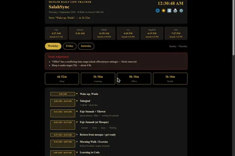

Set one anchor, Fajr time and office hours, and the rest of the day’s schedule, from prayer to sleep, recalculates itself.

It started as a static printed daily-routine sheet. Every time Fajr time shifted with the season, or office hours changed, the whole sheet had to be redone by hand, and a paper sheet cannot record whether a prayer was made in jamaah, alone, or missed.
Just me. This is a personal daily-use tool, not a multi-user product, and it is the one I open first every morning.
It had to work fully offline, with no prayer-time API and no server. It had to hold a genuinely global settings space, about 243 countries plus a full Bangladesh division, district and upazila hierarchy, including multi-timezone countries such as Russia, the US and Australia, without breaking the schedule maths. And it needed a real bilingual UI in Bangla and English, not translated labels bolted on afterwards.
Computed prayer times, not an API. The app uses the praytimes.org solar-calculation algorithm so it never depends on a network call to know when to pray.
Declarative day templates. Each day type (workday, Friday, Saturday) is a list of blocks. A block can be anchored at a computed prayer time, chained after another block, span an explicit range, be back-computed from an anchor, or flex to fill the gap before the next block. One engine resolves all of them, so a new country or day profile needs data, not new code.
No framework, no backend. Vanilla JavaScript with ES modules. A service worker with a network-first strategy keeps the app installable and offline-capable while still picking up the newest version when online. Settings and logs live in local storage, with manual JSON export and import for backup because there is no account to sync to.
Bilingual from the start. Every UI string lives in a Bangla or an English dictionary file and a toggle swaps the whole interface at once. A Bangla typeface is bundled under its open licence so text renders correctly regardless of the device.
24 unit tests (Vitest) cover the pure-logic modules: prayer times, the schedule engine and time handling. GitHub Actions runs them on every push, and the latest runs are green. The UI layer is not covered by automated tests.
Making one Fajr-time input cascade correctly into every other block of the day, across three day profiles and a global location dataset with multi-timezone countries, without the schedule engine needing special-case logic per country.
It replaced the static printed sheet entirely. The schedule now adjusts itself to that day’s actual prayer times instead of being redrawn by hand. It is my own daily tool; prayer and amal streaks are tracked locally and I have no exported numbers to quote.
Treating Bangla and English as a real first-class toggle from the start, with full UI string tables, was far less painful than retrofitting i18n onto a UI that assumed one language.